Any input
English, hiragana, katakana, romaji, or a pasted sentence of kanji. Each kanji comes back in order.
Offline kanji dictionary
Search about 10,300 kanji in English, kana or romaji. Free. No account, no network.


iPhone and iPad (iOS 17+), Mac (macOS 14+), Android 8.0+.
断 · tatsu · to cut off, to sever. Cut off from the network, on purpose.
Try it here
The app's own search engine, running on this page over the same 10,348 kanji. Once it has loaded, it keeps working with the network off.
Arrow keys move through results and Return opens one. Can't type a kanji? Add your system's handwriting keyboard and draw it: Chinese – Handwriting on iPhone, Gboard's Japanese handwriting on Android.
断 · to cut off
Open it and search. There is nothing to sign in to.
The dictionary ships inside the app. The Android build has no INTERNET permission at all.
No analytics, no identifiers. Apple's privacy manifest declares nothing collected. Recent lookups stay on your device.
None.
Free, with no in-app purchases. The code is MIT licensed and public.
These claims are about the apps. This page uses GoatCounter, a cookieless counter, to count visits and clicks on the store buttons.
What it does
English, hiragana, katakana, romaji, or a pasted sentence of kanji. Each kanji comes back in order.
One edit or swapped letters still find it: watr, mountian.
Results are ranked by match quality, then by how common the kanji is. The one you want is usually on top.
ON and KUN readings as kana, kanji with okurigana, and romaji. Meanings, name readings, stroke count, school grade, JLPT level, frequency rank. One tap to copy.
On Mac, iPad and Android tablets, type anywhere to search. Up and down to move, Return to open, ⌘F or Ctrl+F to focus.
On Android, select Japanese text in any app and choose Tatsu from the menu. Recent lookups are kept on the device.
On your devices
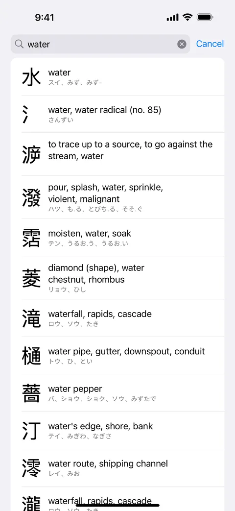
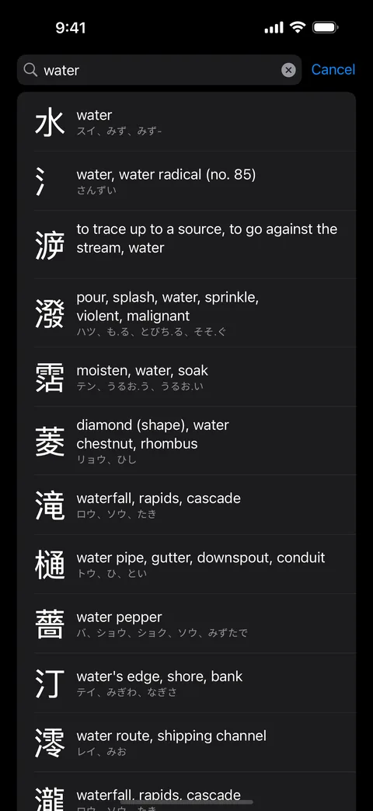
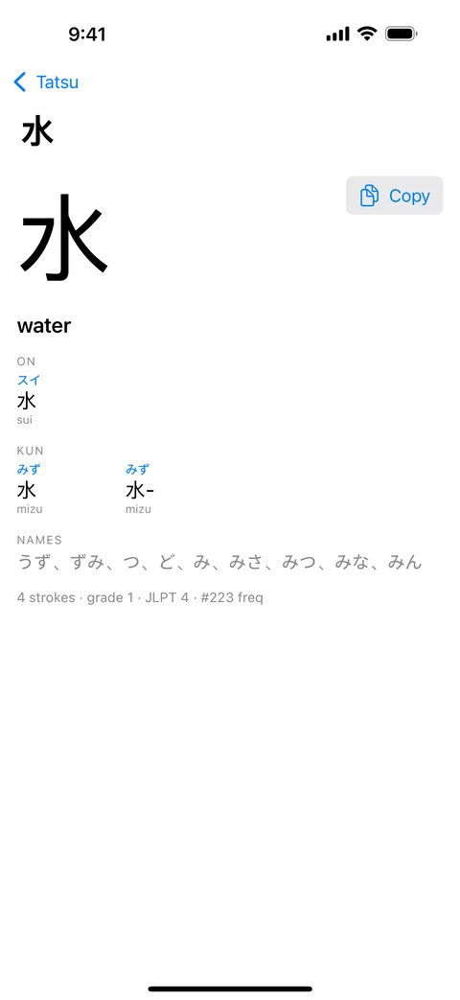
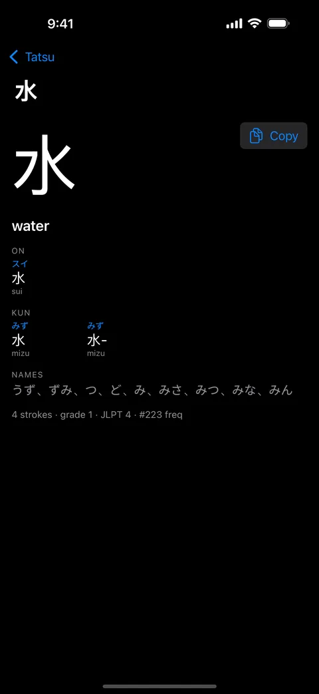
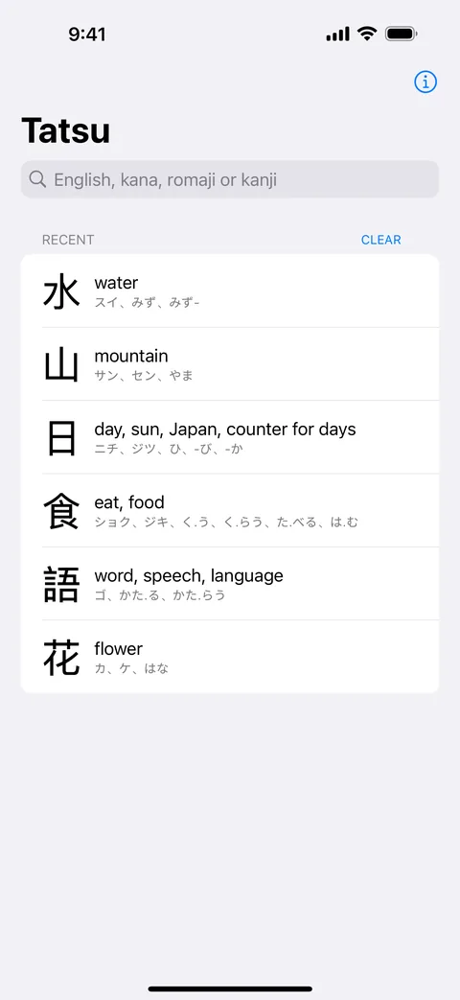
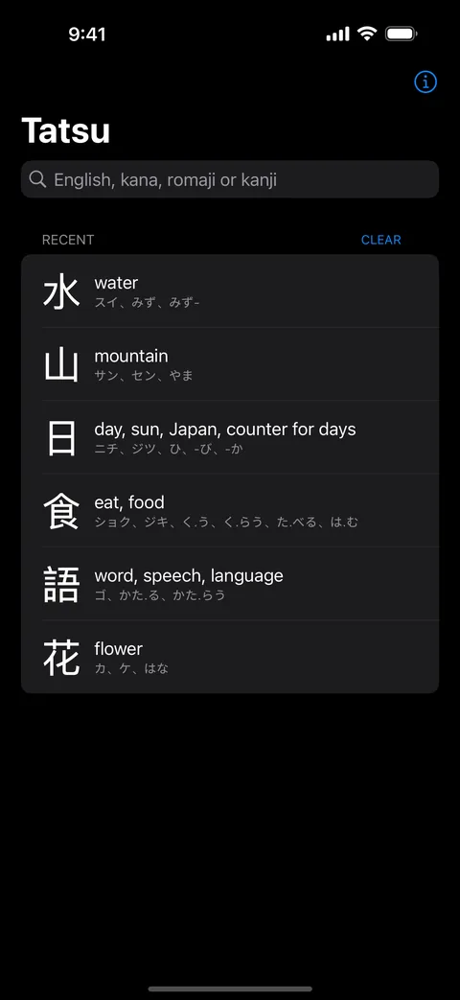
iPad gets the same app with a split view. iOS 17 or later.
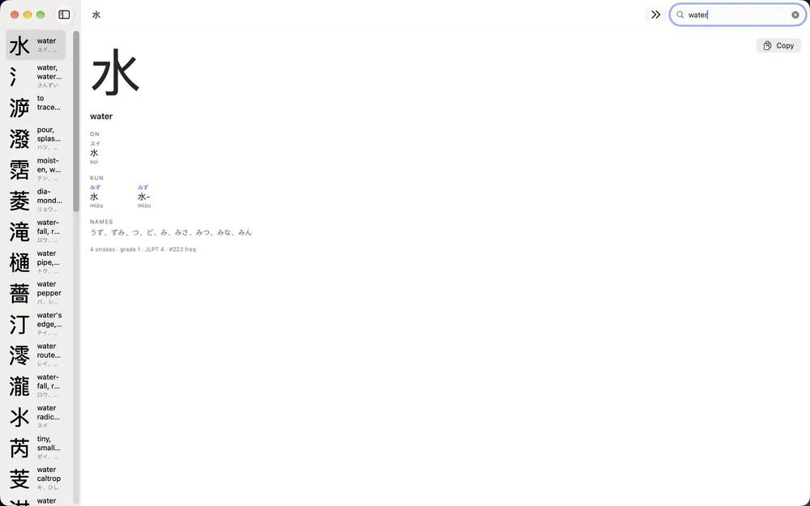
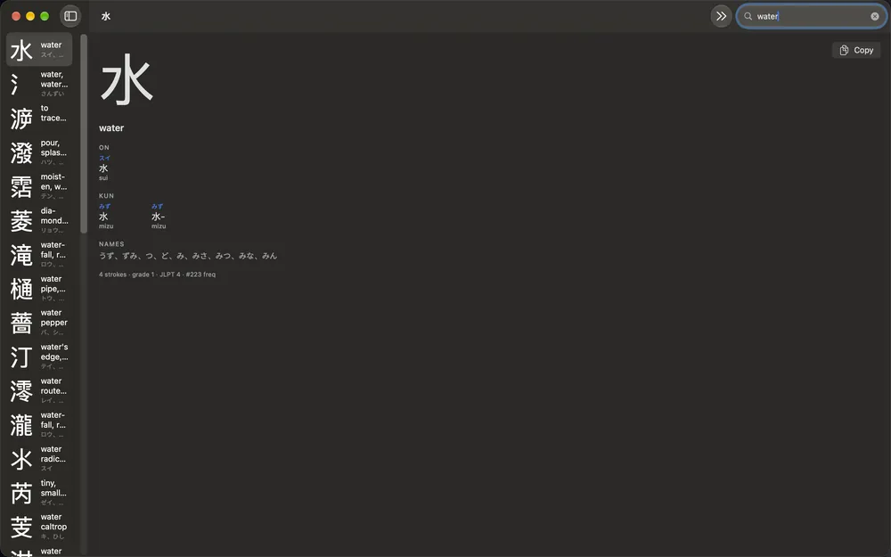
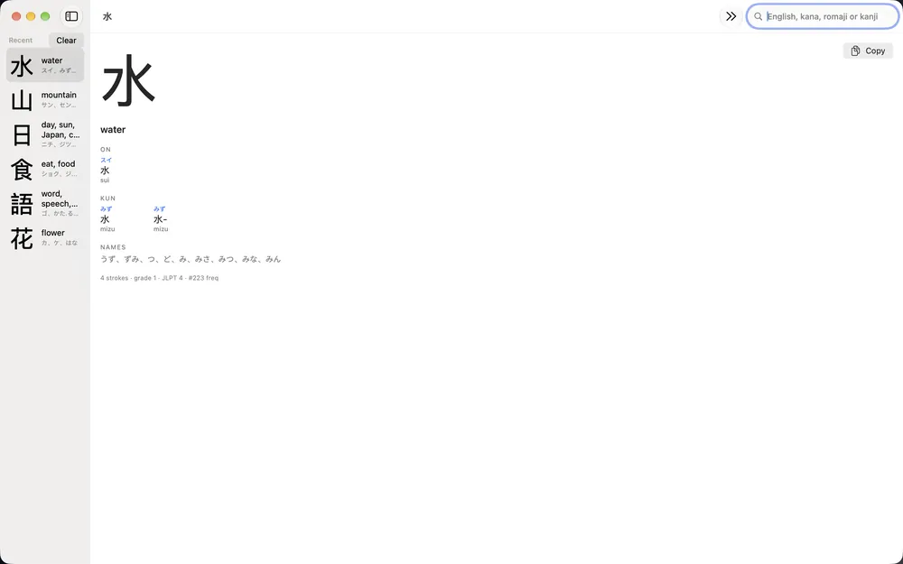
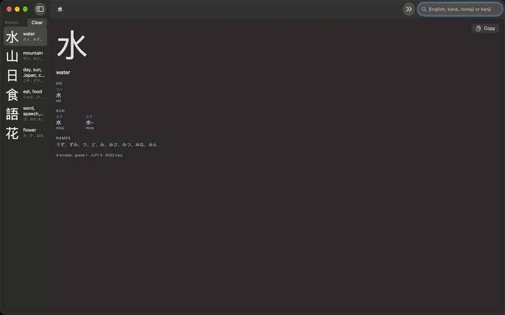
Type anywhere to search. macOS 14 or later.
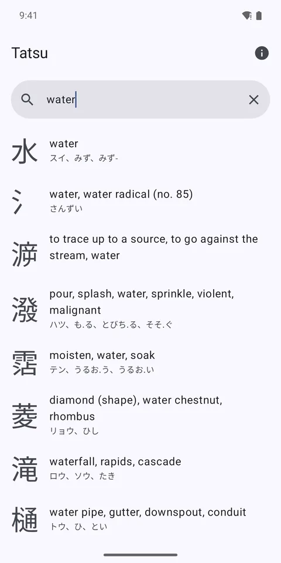
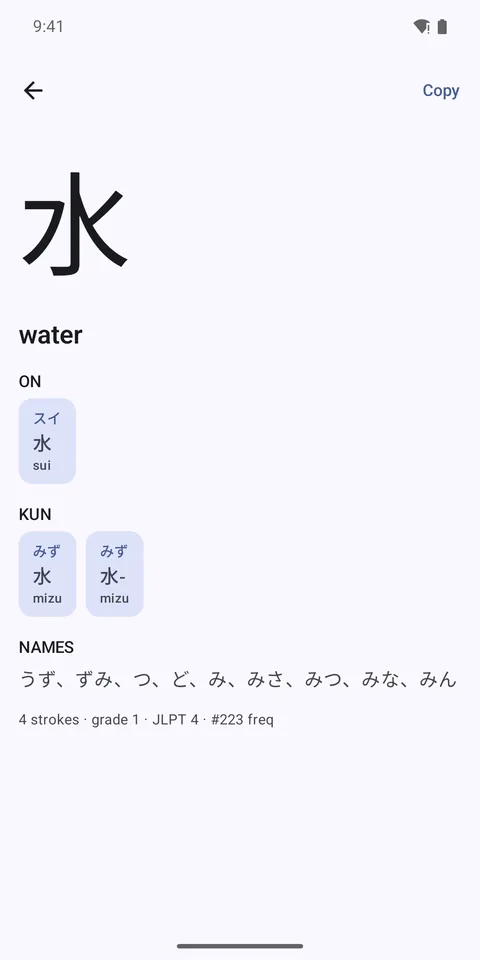
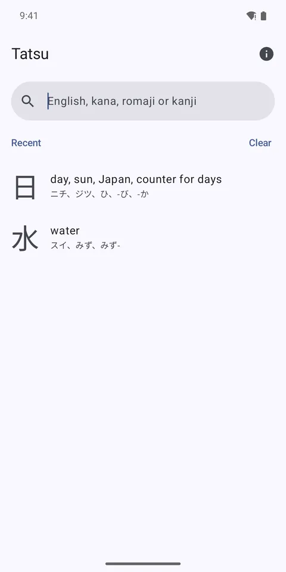
Phones, tablets and foldables, Android 8.0 or later. Screenshots shown in light mode.
Free on iPhone, iPad, Mac and Android. No account, no ads.
iOS 17+ · macOS 14+ · Android 8.0+